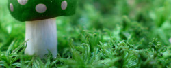

12 jan 2021
Sam Groenevingers

Tuin & Licht Deel 2
Zuidelijk gelegen? Zicht op het westen? Deel 2 van onze spannende reeks. Hoe maak je optimaal gebruik van de lichtinval in je tuin

DE TUIN VAN SAM
12 jan 2021
Sam Groenevingers
Zuidelijk gelegen? Zicht op het westen? Deel 2 van onze spannende reeks. Hoe maak je optimaal gebruik van de lichtinval in je tuin
15 dec 2020
Sam Cruz

Het is weer vrijdag! Wil je je tuin een klein beetje extra pit geven? Vandaag gebruikt Sam enkel een elastiekje en een zoutvatje om mooie tuindecoratie te maken
2 dec 2020
Sam Cruz
Sam legt uit welke paddestoelen giftig zijn en hoe je ze kan herkennen
12 nov 2020
Sam Groenevingers

De start van een nieuwe reeks. Ons team van Sammen leert je in deze 5-delige reeks hoe je optimaal gebruik kan maken van de lichtinval
20 okt 2020
Sam Cruz

Last van slakken? 10 handige tips om slakken te weren uit je tuintje
10 sep 2020
Sam Cruz

Dankzij jullie steun zijn we vastberaden om nog meer mensen te informeren over onze liefde voor Tuinen. Vanaf volgende maand zullen wij starten met een maandelijks magazine: de tuinvrienden van Sam
5 sep 2020
Sam Groenevingers

De verkiezingen zijn achter de rug. Sam kijkt vandaag naar de impact daarvan op jouw tuin
12 aug 2020
Sam Roex

De herfst staat voor de deur. Sam neemt je mee op de 3 mooiste bostochten door de Ardennen

Offerte aanvragen
Vraag een cursus aan
Privacy & Veiligheid
Jobs